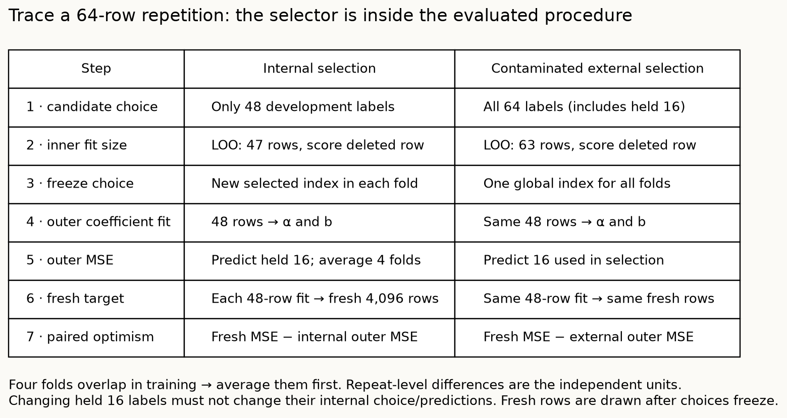

Selection and evaluation boundary

Operational reference¶
| Decision | Eligible labels | Evaluation target |
|---|---|---|
| Coefficient fitting | Declared fit rows | Fixed recipe |
| Inner LOO selection | Outer-development rows | Minimum PRESS/n; first tie |
| Outer evaluation | Held rows after choice freezes | Whole selection procedure at48-row fit size |
| Fresh matched evaluation | New rows after all choices | Same fitted outer models |
| Final refit | All64 development rows | Separate larger-sample procedure |
KRR Eq3 includes the unpenalized intercept and sum(α)=0. LOO uses the augmented inverse diagonal. Arbitrarily refitting preprocessing per deleted row would change that identity. ARD reduces to isotropic RBF when coordinate scales agree.
Thirty and1,000 synthetic dataset repetitions use the same27-candidate grid and four outer folds. The longer run retains the first30. Use paired repeat-level differences; do not treat four overlapping outer folds as independent samples. The selected-LOO gap has a63/64 training-size difference; outer optimism contrasts match48-row coefficient fits.
Original paper Figure2/fourfold inner iterative search and Table8/thirteen-task RBF benchmark are INCOMPARABLE. The old pure-noise result is preserved separately. Source-equation checks are not official GKM software parity.
Primary full paper §§2–6 · Source inventory · Precision evidence
Quick trace and diagnostic¶
- Noise: two independent .4/.6 estimates → expected minimum .45, true risk .5.
- KRR: solve augmented [K+λI,1;1ᵀ,0] system; preserve b and sum(α)=0.
- LOO: residual_i=α_i/(C⁻¹)_ii; mean squared residual is PRESS/n.
- Internal outer fold: 64 → exclude 16 → select on 48 with LOO fits 47 → refit 48 → predict 16.
- External comparator: select on 64 first → refit 48 → predict 16 whose labels already affected selection.
- Optimism: fresh score minus reported score, using the same fitted predictor/training size.
- Paired interval: subtract within an independent dataset repetition, then estimate mean/SE; never count four overlapping folds as independent repeats.
The pure-noise minimum is monotone with a nested candidate budget. Real fresh-test performance need not be. Nested evaluation measures selection errors; it does not automatically improve the selected model.